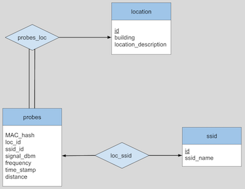

This is a project about human flow at Davidson College.*
* The traffic our project was interested in was 802.11 management frames unencrypted broadcast and/or multicast packets. Since our analysis was of 802.11 frames, we did not capture intentional user traffic from the device, ex. search, email, gaming etc., but only automatic, non-personal traffic sent by devices.
Getting the Data: Using Raspberry Pi's To Capture Probe Requests on the Network
A Raspberry Pi, below the desk, in the Union.
To setup this project, we first picked locations around campus and found relatively obscure spots near entrances with
outlets where we could place our wifi devices that would be high traffic enough to collect meaningful data. Our devices
were Raspberry Pis plugged into the wall running a wifi capturing script to receive wifi probe data. Lucky for us, most
of the time students and college staff did not move or unplug our setups. The devices ran consistently throughout the time
we tested, and provided interesting insights into the flow of students on campus.
Storing the Data: Processing and Parsing the Wireless Probe Requests

Our database E-R Diagram
After collecting the data for the day the devices then sent the information to our centralized database server located
on campus using another script. On the server we parsed the data python and taking advantage of various computer science
techniques including block chunking, parallel processing and shared memory objects with locks. From some brief analysis
of developing the parser we were able to increase our processing time by 4x - 6x. Using our initial parser schema with
a basic for loop to process 80,000 lines took 24 seconds. With multiple processes we were able to drop the time down to
14 seconds. Then by breaking up the file into 8 different pieces and then running them in parallel on the 8 multiprocessors
we were able to drop the time down to 7 seconds! 8,700 lines a second for 17 million lines meant that we were able to
parse our database in 30 minutes rather than 1 hour and 20 minutes. Huge help for dealing with bugs and checking the data.
Visualizing the Data: Seeking to Understand the Data and Make Meaningful Representations
One of the visualizations on the "maps" page
When the data has been collected and parsed in our MySQL database, our website is setup to query the database with
MySQL queries which are called by php. visualize the data in different ways, which the user can select from the interface.
The bar chart graph is great as it displays the number of probes in each building for each day, giving an overall view
of which buildings are more popular and when each is most popular. All in all, we have collected 17 million wifi probe
requests since April 18th to May 6th. The location that had the most probe requests was the Library, with 6 million
probe requests.